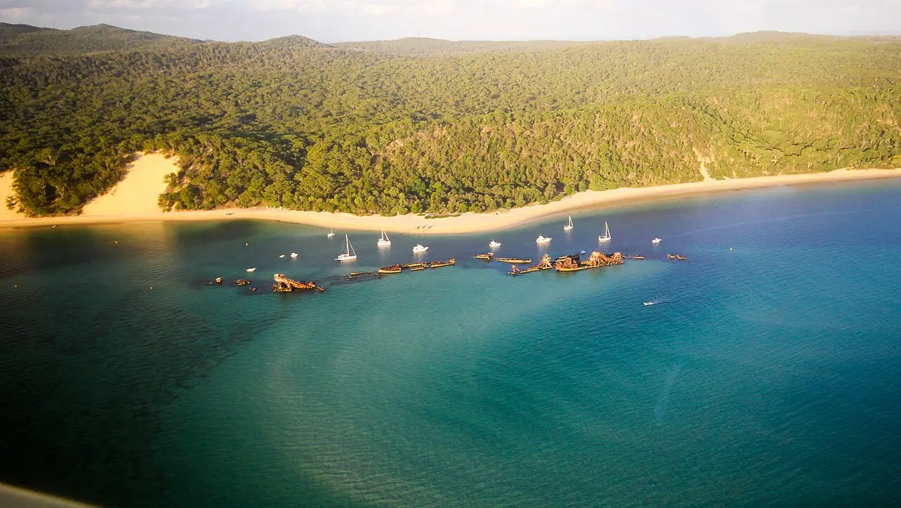

Tangalooma Wrecks
Moreton Island, Queensland, Australie · snorkeling, kayak, plongée

Une quinzaine d’épaves coulées volontairement près du rivage de Moreton Island pour former un abri pour les bateaux. Elles sont devenues un récif artificiel qu’on explore au masque et tuba ou en kayak depuis la plage.
- Lieu
- Moreton Island, Queensland, Australie
- Niveau
- Débutant
- Activités
- snorkeling, kayak, plongée
- Type d'eau
- Mer / océan
- Coordonnées
- -27.16, 153.37 (position approximative du secteur)
Dangers à connaître
- Nombreux bateaux au mouillage près des épaves : signale-toi avec une bouée.
- Courants de marée le long des épaves.
- Métal rouillé et coupant : ne pénètre pas dans les coques.
Le conseil d'Ocean Buddy
Viens à l’étale de marée pour une eau plus claire et un courant plus faible, et reste à l’extérieur des coques.
Ouvrir dans Ocean Buddy Télécharger sur l'App Store
Source : Fiche Ocean Buddy · septembre 2026 · à vérifier localement.